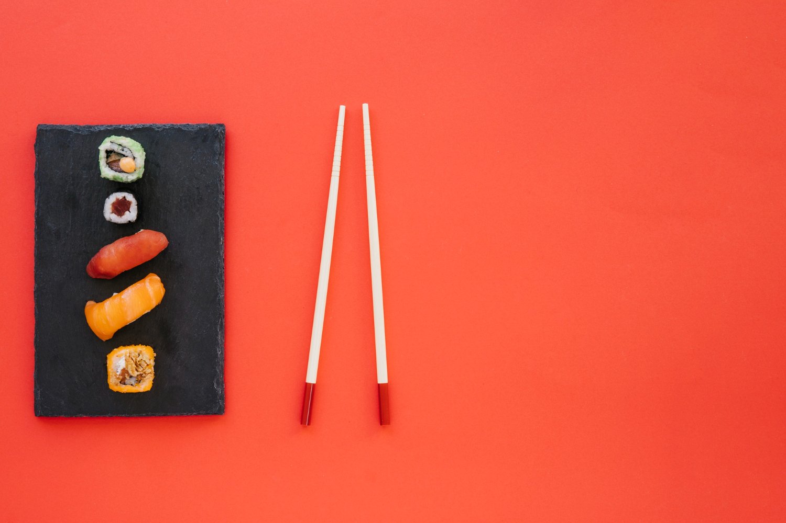
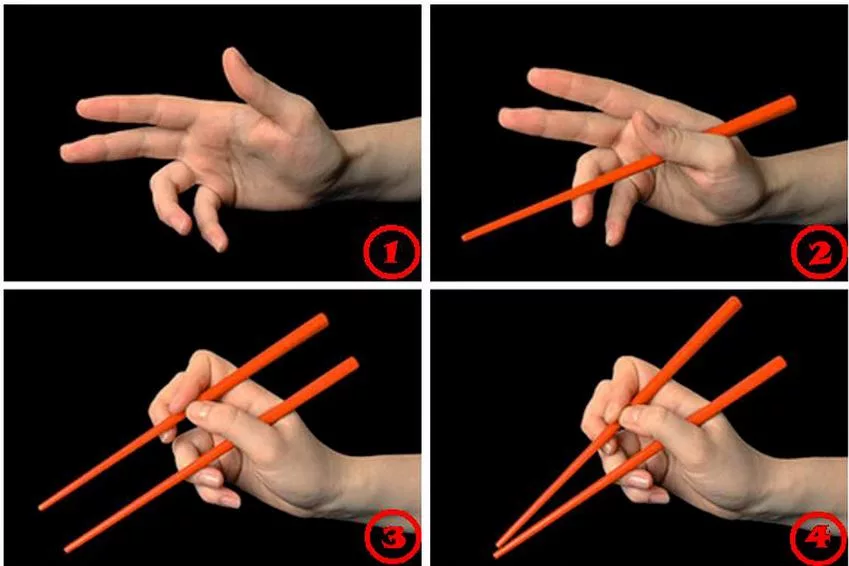

さくら
Добро пожаловать в нашу коллекцию статей о японской культуре и кулинарии!
Как правильно держать палочки для суш?
Японская кухня — это не только вкусовые ощущения, но и культурный ритуал. Одним из важнейших элементов этого ритуала является использование палочек для еды. Для многих гостей японских кафе или ресторанов суши правильное обращение с палочками может показаться сложным, но на самом деле это просто вопрос практики и знания основных правил.
В этой статье мы расскажем вам, как правильно держать палочки для суши, чтобы вы могли наслаждаться едой в нашем кафе с максимальным комфортом и уважением к японским традициям.
Использование палочек — это не только практичный навык, но и важная часть японской культуры. Вот несколько простых шагов, которые помогут вам освоить технику
1. Нижняя палочка: Положите одну палочку между большим и безымянным пальцами, опирая её на основание указательного пальца. Она должна оставаться неподвижной.
2. Верхняя палочка: Возьмите вторую палочку как карандаш, используя большой, указательный и средний пальцы. Именно она будет двигаться.
3. Практика: Двигайте только верхнюю палочку, захватывая кусочки еды. Со временем движения станут естественными.
Важно: Не оставляйте палочки вертикально в рисе, не передавайте еду с палочек на палочки и не играйте ими. Это считается невежливым.
Приходите в наше кафе, чтобы попрактиковаться в использовании палочек за вкуснейшими суши и роллами!